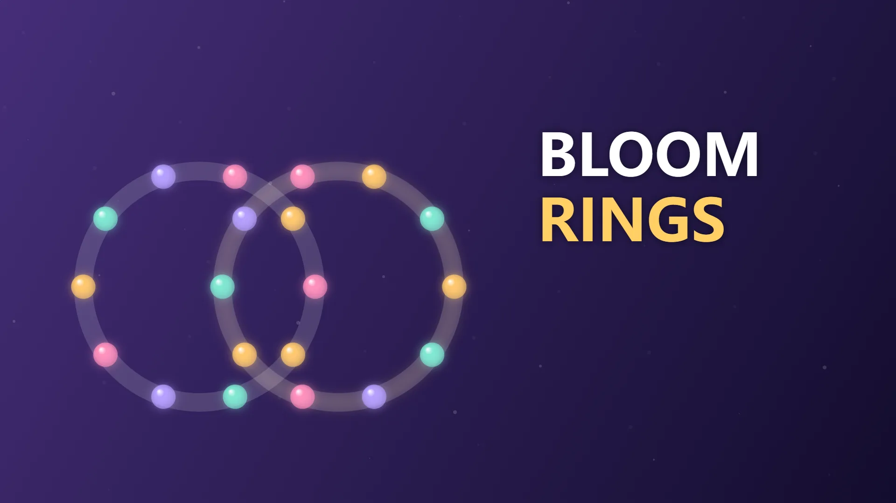

Puzzle · 30 handcrafted levels
Bloom Rings
Rotate overlapping rings to gather beads of one color. Make them bloom, then find the next chain. Pebbles, locked rings and limited moves add new twists.
Play in English →Controls & tipsPlay on itch.io ↗